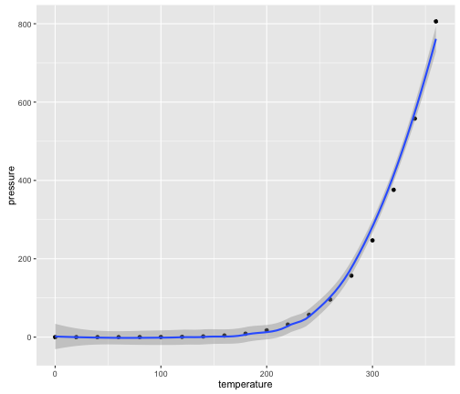
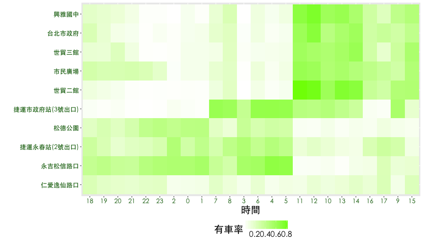

library(data.table) # data ETL
library(dplyr) # data ETL
library(knitr) # dynamic report generation, RMarkdown
library(ggplot2) # data Viz
library(scales) # show percent labels in ggplot2
library(GGally) # extension to ggplot2
library(ggmap) # extension to ggplot2
library(geosphere) # distance between two location (lon, lat)
library(reshape2) # long and wide format
library(ggdendro) # plot dendrograms and tree
Advanced EDA with R
Data Visualization with ggplot
Johnson Hsieh and Ben Chen
先載入會用到的套件
一切先從讀檔開始
ubike <- fread("data/ubikebyhourutf8/ubike-hour-201502-utf8.csv",
data.table = FALSE,
colClasses=c("factor","integer","integer","factor","factor","numeric",
"numeric","integer","numeric","integer","integer","numeric",
"numeric","integer","integer","numeric","numeric","numeric",
"numeric","numeric","numeric"))
訂定主題
探索性資料分析 — 以YouBike為例
- 專案主題：捷運市府站Youbike租借分析
- 小組成員：Johnson (DSP C.K.O.)
- 角色扮演：YouBike業者御用資料科學家
- 研究目的：捷運市府站為規模最大的YouBike場站 (共180個停車格)，尖峰時段期間車輛的平均出借變化量達27輛，透過該場站與週邊場站租借狀況以及天氣資料的交叉比對，找出使用者行為以提供進一步加值服務的規劃。
規劃流程：
- 訂定主題
- 資料探索
- 市府站 vs. 天氣
- 市府站 vs. 週邊場站
- 探索關鍵因子
- 看圖說故事
- 決策建議
整理一下資料
ubike1 <- filter(ubike, sno==1) %>%
mutate(sbi.range=max.sbi-min.sbi) %>%
mutate(is.rushhours=cut(hour, breaks=c(0, 8, 10, 17, 20, 24),
labels = c(0,1,0,1,0), right=FALSE)) %>%
mutate(is.weekday=ifelse(strftime(date, "%u") < 6, 1, 0))
tab1 <- filter(ubike1, is.rushhours==1, is.weekday==1) %>%
group_by(tot) %>%
summarise(min(sbi.range), mean(sbi.range), max(sbi.range))
市府站車輛數基本數據
# 有車率
df1 <- group_by(ubike1, date, hour) %>%
summarise(rate.sbi=mean(avg.sbi)/tot) %>%
group_by(hour) %>%
summarise(rate.sbi=mean(rate.sbi))
# 設定畫圖的字體
thm <- function() theme(text=element_text(size=20, family="STHeiti"))
# thm <- function() theme(text=element_text(size=20)) # Windows user
library(scales)
ggplot(df1, aes(x=hour, y=rate.sbi)) +
geom_bar(stat="identity") +
ggtitle("捷運市政府站") +
labs(x="時間", y="有車率") +
thm() +
theme(legend.title=element_blank()) +
scale_y_continuous(labels = percent)
市府站車輛數基本數據

右圖為捷運市府站每天有車率的變化，大約晚間十點至隔天凌晨兩點間有車率 (當時段平均車輛數 / 總車輛數) 最低，係因此時YouBike公司將車輛回收，於清晨三點左右陸續將車輛補回。由圖可知三點與四點時有車率大幅增加兩次，推測是市府站規模較大需要兩次小貨車補給 (每次約補給30輛車)。在上午七點左右，有車率開始明顯下降，直至上午十點到達低點，即29%。之後有車率略微增加，直至下午一點達到當日次高峰。可以發現，下午三點之後有車率再度明顯下降，直至晚間九點。
場站有車率與晴雨關係
- 定義：有車率 (
rate.sbi) 為 平均車輛數 / 總停車格數 (avg.sbi/tot) - 定義：是否下雨 (
is.rain)，當該時段累積雨量大於1mm訂為雨天，反之為晴天 依 日期 (date)、時間 (hour)、是否下雨 (is.rain) 做分組 (group_by) 計算 平均有車率 (rate.sbi = mean(avg.sbi/tot))，得到下表：
| hour | is.rain | rate.sbi |
|---|---|---|
| 8 | 晴天 | 0.475 |
| 8 | 雨天 | 0.534 |
| 9 | 晴天 | 0.311 |
| 9 | 雨天 | 0.437 |
| 10 | 晴天 | 0.265 |
| 10 | 雨天 | 0.389 |
df2 <- filter(ubike, sno==1) %>%
mutate(is.rain=rainfall>1) %>%
mutate(is.rain=factor(is.rain, levels=c(FALSE, TRUE),
labels = c("晴天","雨天"))) %>%
select(date, hour, tot, avg.sbi, avg.bemp, temp, is.rain) %>%
group_by(date, hour, is.rain) %>%
summarise(rate.sbi=mean(avg.sbi)/tot) %>%
group_by(hour, is.rain) %>%
summarise(rate.sbi=mean(rate.sbi))
長條圖範例
首先用長條圖 (bar chart) 來探索這份報表，當欄位大於二時，將依賴顏色做區隔，一般而言長條圖有以下變型：
- Dodge plot
- Facet panels
- Pyramid (金字塔圖)
Dodge Plot
Hint: geom_bar(stat="identity", position="dodge")
ggplot(df2, aes(x=hour, y=rate.sbi, fill=is.rain)) +
geom_bar(stat="identity", position="dodge") +
labs(x="時間", y="有車率") +
thm() +
theme(legend.title=element_blank())
Dodge Plot

Facet panels
Hint: facet_grid(y~.) or facet_grid(.~x)
ggplot(df2, aes(x=hour, y=rate.sbi, fill=is.rain)) +
geom_bar(stat="identity", position="dodge") +
labs(x="時間", y="有車率") +
thm() +
theme(legend.title=element_blank()) +
facet_grid(is.rain~.)
Facet panels

Facet panels
Hint: facet_grid(y~.) or facet_grid(.~x)
ggplot(df2, aes(x=hour, y=rate.sbi, fill=is.rain)) +
geom_bar(stat="identity", position="dodge") +
labs(x="時間", y="有車率") +
thm() +
theme(legend.title=element_blank()) +
facet_grid(.~is.rain)
Facet panels

Pyramid
Hint: filter(df2, is.rain=="晴天"), and coord_flip()
ggplot(df2, aes(x=hour,y=rate.sbi, fill=is.rain)) +
geom_bar(data=filter(df2, is.rain=="晴天"), stat="identity") +
geom_bar(aes(y=rate.sbi*(-1)), data=filter(df2, is.rain=="雨天"),
stat="identity") +
scale_y_continuous(breaks=seq(from=-1, to=1, by=0.1),
labels=abs(seq(-1, 1, 0.1))) +
labs(x="時間", y="有車率") +
theme(legend.title=element_blank()) +
coord_flip() + thm()
Pyramid

熱點圖
熱點圖 (heatmap) 是用顏色深淺呈現數值大小的視覺化。
Hint: geom_tile()
ggplot(df2, aes(x=hour, y=is.rain, fill=rate.sbi)) +
geom_tile() +
scale_fill_gradient(name="有車率", low="white", high="midnightblue") +
labs(x="時間", y="天氣") +
thm()
熱點圖

平行座標圖
平行座標圖 (Parallel coordinate plot) 多用於呈現多欄位的資料視覺化，強調欄位的順序性，特別適合用在因果關係的陳述。譬如：行業別 -> 是否上DSP課程 -> 職場表現。
Hint: library(GGally) and ggparcoord()
library(GGally)
df2 <- mutate(df2, rain=as.numeric(is.rain)-1)
ggparcoord(data = iris, columns = 1:4, groupColumn = 5,
title = "Parallel Coordinate Plot for the Iris Data") + thm()
平行座標圖

與鄰近場站的關係
試著探索市府站與鄰近場站的關係，此時需要透過經緯度計算場站與場站之間的距離。透過geosphere套件中的distm函數可以批次計算所有場站之間的兩兩距離，整理得到下表，離捷運市府站最近的場站依序是台北市政府 (438m), 興雅國中 (484m)...。
Hint: library(geosphere), distm, group_by, distinct
與鄰近場站的關係
tmp <- group_by(ubike, sno, sna, sarea, lat, lng) %>% distinct
dist <- round(distm(x=tmp[, c("lng","lat")])[,1])
df5 <- tmp %>% select(sno, sna, sarea, lat, lng) %>%
cbind(dist) %>% arrange(dist) %>% top_n(10, wt = -dist)
與鄰近場站的關係
| sno | sna | sarea | lat | lng | dist |
|---|---|---|---|---|---|
| 1 | 捷運市政府站(3號出口) | 信義區 | 25.041 | 121.568 | 0 |
| 3 | 台北市政府 | 信義區 | 25.038 | 121.565 | 438 |
| 5 | 興雅國中 | 信義區 | 25.037 | 121.569 | 484 |
| 25 | 永吉松信路口 | 信義區 | 25.045 | 121.572 | 659 |
| 6 | 世貿二館 | 信義區 | 25.035 | 121.566 | 718 |
| 150 | 松德公園 | 信義區 | 25.037 | 121.573 | 734 |
| 138 | 捷運永春站(2號出口) | 信義區 | 25.041 | 121.575 | 754 |
| 8 | 世貿三館 | 信義區 | 25.035 | 121.564 | 759 |
| 113 | 仁愛逸仙路口 | 信義區 | 25.038 | 121.561 | 763 |
| 4 | 市民廣場 | 信義區 | 25.036 | 121.562 | 778 |
地圖應用範例
利用ggmap套件導入google map作為底圖將場站位置標示出來。
Hint: library(ggmap), map <- get_map("Taipei"); ggmap(map), geom_point
library(ggmap)
df5$is.cityhall <- factor(c(1, rep(0, 9)), levels=1:0)
map <- get_map(location=c(lon=df5$lng[1], lat=df5$lat[1]) , zoom = 15)
ggmap(map) + thm() +
geom_point(data=df5, aes(x=lng, y=lat, colour=is.cityhall), size=5) +
geom_text(data=df5, aes(x=lng, y=lat, label=sna, colour=is.cityhall),
position="jitter", vjust=-1, hjust=0.5, size=4, family="STHeiti") +
theme(legend.position="none") + scale_color_brewer(palette="Set1")
地圖應用範例
熱點圖進階應用

- 有車率與使用率的熱點圖可以看到什麼趨勢？
- 有沒有自動排序的統計方法？
熱點圖進階應用
觀察鄰近捷運市府站的10個YouBike場站，每一天 有車率 與 使用率的狀況。以有車率為例，透過觀察可以發現{興雅國中, 台北市政府, 市民廣場, 世貿三館, 世貿二館} 時間分佈有相似的狀況，{永吉松信路口, 松德公園, 捷運永春站} 也有相似的情況，而捷運市府站介於兩群之間，仁愛逸仙路口則是一枝獨秀。
- 有車率與使用率的熱點圖可以看到什麼趨勢？
- 有沒有自動排序的統計方法？
熱點圖進階應用
tmp1 <- filter(ubike, sno%in%df5$sno) %>%
mutate(is.rain=rainfall>1) %>%
mutate(is.rain=factor(is.rain, levels=c(FALSE, TRUE),
labels = c("晴天","雨天"))) %>%
mutate(is.weekday=strftime(date, "%u")<6) %>%
mutate(is.weekday=factor(is.weekday, levels=c(FALSE, TRUE),
labels=c("平日","假日"))) %>%
mutate(is.rushhours=cut(hour, breaks=c(0, 4, 7, 24), right=FALSE)) %>%
group_by(date, sno, sna, is.weekday, is.rushhours, is.rain, hour, tot) %>%
summarise(rate.sbi=mean(avg.sbi)/tot, rate.used=mean(max.sbi-min.sbi)/tot)
df6 <- tmp1 %>%
filter(is.weekday=="平日", is.rain=="晴天") %>%
group_by(sno, sna, sna, hour) %>%
summarise(rate.sbi=mean(rate.sbi), rate.used=mean(rate.used))
熱點圖進階應用
ggplot(df6, aes(x=hour, y=sna, fill=rate.sbi)) + geom_tile() + thm() +
theme(legend.position="bottom") +
scale_fill_gradient(name="有車率", low="white", high="lawngreen") +
labs(x="時間", y="") +
theme(axis.text = element_text(size = 13, color="darkgreen"))
熱點圖進階應用
熱點圖進階應用
ggplot(df6, aes(x=hour, y=sna, fill=rate.used)) + geom_tile() + thm() +
theme(legend.position="bottom") +
scale_fill_gradient(name="使用率", low="white", high="Navy") +
labs(x="時間", y="") +
theme(axis.text = element_text(size = 13, color="darkblue"))
熱點圖進階應用

heatmap 排序
當heatmap的x軸或y軸為類別變數時，可以經由階層分群法 (hierarchical clustering) 做行或列的排序。
- 首先我們需要一個 場站對時間 (sna ~ hour) 的有車率 (rate.sbi) 矩陣 (
dcast) - 使用階層分群演算法 (
hclust) - 畫出分群樹狀圖 (
ggdendrogram) - 取得排序 (
order)
heatmap 排序
Hint: library(reshape2), library(ggdendro)
dat <- dcast(df6, sna~hour, value.var="rate.sbi")
rownames(dat) <- dat[,1]
dat <- dat[,-1]
heatmap 排序
| 7 | 8 | 9 | 10 | 11 | 12 | |
|---|---|---|---|---|---|---|
| 捷運市政府站(3號出口) | 0.629 | 0.602 | 0.539 | 0.480 | 0.461 | 0.447 |
| 捷運永春站(2號出口) | 0.287 | 0.421 | 0.299 | 0.146 | 0.134 | 0.191 |
| 仁愛逸仙路口 | 0.196 | 0.130 | 0.083 | 0.117 | 0.086 | 0.151 |
| 世貿二館 | 0.116 | 0.203 | 0.492 | 0.601 | 0.836 | 0.814 |
| 世貿三館 | 0.087 | 0.210 | 0.343 | 0.514 | 0.585 | 0.546 |
| 市民廣場 | 0.159 | 0.199 | 0.311 | 0.504 | 0.632 | 0.602 |
| 松德公園 | 0.202 | 0.139 | 0.073 | 0.078 | 0.044 | 0.040 |
| 台北市政府 | 0.172 | 0.218 | 0.315 | 0.455 | 0.611 | 0.711 |
| 興雅國中 | 0.153 | 0.261 | 0.418 | 0.597 | 0.690 | 0.764 |
| 永吉松信路口 | 0.371 | 0.304 | 0.141 | 0.051 | 0.032 | 0.035 |
heatmap 排序
hc.sna <- hclust(dist(dat))
ggdendrogram(hc.sna, rotate = TRUE) + thm() + labs(x="", y="")

heatmap 排序
# hc.sna$order
sna.order <- data.frame(order=1:10, sna=hc.sna$labels[hc.sna$order])
kable(sna.order, format = "html")
| order | sna |
|---|---|
| 1 | 仁愛逸仙路口 |
| 2 | 永吉松信路口 |
| 3 | 捷運永春站(2號出口) |
| 4 | 松德公園 |
| 5 | 捷運市政府站(3號出口) |
| 6 | 世貿二館 |
| 7 | 市民廣場 |
| 8 | 世貿三館 |
| 9 | 台北市政府 |
| 10 | 興雅國中 |
heatmap 排序
df7 <- df6
df7$sna <- factor(df7$sna, levels=(sna.order[,2]))
ggplot(df7, aes(x=hour, y=sna, fill=rate.sbi)) + geom_tile() + thm() +
theme(legend.position="bottom") +
scale_fill_gradient(name="有車率", low="white", high="lawngreen") +
labs(x="時間", y="") +
theme(axis.text = element_text(size = 13, color="darkgreen"))
heatmap 排序

對時間做排序
hc.hour <- hclust(dist(t(dat)))
ggdendrogram(hc.hour) + thm() + labs(x="", y="")
對時間做排序
hour.order <- data.frame(order=1:24, sna=hc.hour$labels[hc.hour$order])
df7$hour <- factor(df7$hour, levels=(hour.order[,2]))
ggplot(df7, aes(x=hour, y=sna, fill=rate.sbi)) + geom_tile() + thm()+
theme(legend.position="bottom") +
scale_fill_gradient(name="有車率", low="white", high="lawngreen") +
labs(x="時間", y="") +
theme(axis.text = element_text(size = 13, color="darkgreen"))
對時間做排序

試著對 使用率 進行排序
dat <- dcast(df6, sna~hour, value.var="rate.used")
rownames(dat) <- dat[,1]
dat <- dat[,-1]
hc.sna <- hclust(dist(dat))
hc.hour <- hclust(dist(t(dat)))
df8 <- df6
df8$sna <- factor(df8$sna, levels = hc.sna$labels[hc.sna$order])
df8$hour <- factor(df8$hour, levels = hc.hour$labels[hc.hour$order])
ggplot(df8, aes(x=hour, y=sna, fill=rate.used)) + geom_tile() + thm()+
theme(legend.position="bottom") +
scale_fill_gradient(name="使用率", low="white", high="Navy") +
labs(x="時間", y="") +
theme(axis.text = element_text(size = 13, color="darkblue"))
試著對 使用率 進行排序

平行座標圖進階應用
平行座標圖常用來展示不同群組在諸多變數間的差異性，當群組分類方式未知時，可以利用機器學習 (machine learning) 中的非監督式學習 (unsupervised learning)，幫資料做分群。分群之後再藉由平行座標圖來呈現資料的脈絡。
- 選擇 平日, 晴天, 7-21時鄰近市府站的資料進行分析
- 以場站大小 (
tot)、有車率 (rate.sbi)、使用率 (rate.used) 三個變數做分群 - 使用K-means演算法分3群
- 將分群結果視作新的變數畫平行座標圖
平行座標圖進階應用
tmp2 <- filter(tmp1, is.weekday=="平日", is.rain=="晴天", hour>6 & hour<22) %>%
group_by(sno, sna, tot) %>%
summarise(rate.sbi=mean(rate.sbi), rate.used=mean(rate.used))
km <- kmeans(tmp2[,3:5], 3)
km
K-means clustering with 3 clusters of sizes 4, 1, 5
Cluster means:
tot rate.sbi rate.used
1 65.0 0.3761128 0.1867222
2 180.0 0.2840504 0.1123704
3 35.2 0.2137039 0.2520515
Clustering vector:
[1] 2 3 1 1 1 1 3 3 3 3
Within cluster sum of squares by cluster:
[1] 300.00679 0.00000 92.84539
(between_SS / total_SS = 97.8 %)
Available components:
[1] "cluster" "centers" "totss" "withinss"
[5] "tot.withinss" "betweenss" "size" "iter"
[9] "ifault"
平行座標圖進階應用
df9 <- group_by(tmp2) %>%
transmute(sna, tot, rate.sbi, rate.used,
group=factor(km$cluster)) %>%
arrange(group)
ggparcoord(as.data.frame(df9), columns = c(1,2,3,4), groupColumn = 5,
scale="uniminmax") +
geom_line(size=1) + thm() + theme(legend.title=element_blank()) +
scale_x_discrete(labels=c("場站","總停車格","有車率","使用率")) +
labs(x="", y="")
平行座標圖進階應用
平行座標圖進階應用
| sna | tot | rate.sbi | rate.used | group |
|---|---|---|---|---|
| 市民廣場 | 60 | 0.388 | 0.153 | 1 |
| 興雅國中 | 60 | 0.378 | 0.166 | 1 |
| 世貿二館 | 80 | 0.398 | 0.244 | 1 |
| 世貿三館 | 60 | 0.340 | 0.184 | 1 |
| 捷運市政府站(3號出口) | 180 | 0.284 | 0.112 | 2 |
| 台北市政府 | 40 | 0.350 | 0.256 | 3 |
| 永吉松信路口 | 30 | 0.205 | 0.284 | 3 |
| 仁愛逸仙路口 | 38 | 0.168 | 0.202 | 3 |
| 捷運永春站(2號出口) | 30 | 0.221 | 0.340 | 3 |
| 松德公園 | 38 | 0.125 | 0.178 | 3 |
小明想要玩遙控飛機
地圖應用練習
小明喜歡玩遙控飛機，想利用週末玩，在中和希望找一個風比較小的地點，請幫他在地圖上圈出每個腳踏車站的位置，並且以圓圈大小表示下午3點的風速，透明度表示濕度，顏色表示腳踏車平均車數。
ubike3<- filter(ubike,sarea=='中和區', hour==15) %>%
mutate(weekday=weekdays(as.Date(date))) %>%
filter(weekday=="周六"|weekday=="周日") %>%
group_by(sna) %>%
summarise(avg_wind=mean(max.anemo),avg_sbi=mean(avg.sbi),
avg_hu=mean(humidity),lng=unique(lng),lat=unique(lat))
# 讀取中和區的地圖，以中和區的第一筆資料的經緯度為中心
m <- get_map(location=c(lon=ubike3$lng[1], lat=ubike3$lat[1]),
maptype = "roadmap", zoom = 14)
# ggmap(m)畫出地圖，並以此為底圖，在地圖上以geom_point畫出圓圈
ggmap(m)+
geom_point(data=ubike3,
aes(x=lng, y=lat, size=avg_wind, alpha=avg_hu, color=avg_sbi))+
scale_size(range = c(5,20))+
scale_alpha(range = c(0.5,1))+
geom_text(data=ubike3,aes(x=lng,y=lat,label=sna),color='red',vjust=c(-1,1,1,0),
hjust=0,fontface=2,family = "STHeiti")+
theme(text=element_text(size=20))
參數解釋
aes(x=lng, y=lat, size=avg_wind, alpha=avg_hu, color=avg_sbi)
- X和Y為經緯度
- size以avg_wind為依據
- alpha以avg_hu為依據
- color以avg_sbi
- fill為填滿空間的顏色
- shape控制點的形狀
- 參數放在aes外的話，必須直接填入數值 (exp: size=5)
參數解釋
- scale_XXX控制各項參數的範圍
- geom_text
- 將站名顯示於地圖上
- vjust與hjust分別控制垂直與水平方向的微調
- facebold:
- 字型樣式
- 1代表標準
- 2代表粗體
- 3代表斜體
- 4代表斜粗體
可能會用到的小撇步
nankang <- geocode('南港軟體園區', source = "google")
# nankang <- geocode(URLencode('南港軟體園區'), source = "google")
nan_map <- get_map(location=c(lon=nankang$lon,lat=nankang$lat),
zoom=15, maptype = 'roadmap', source = 'osm')
ggmap(nan_map)